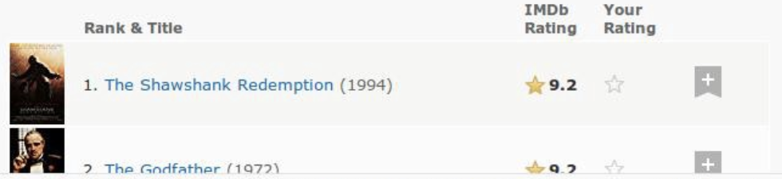
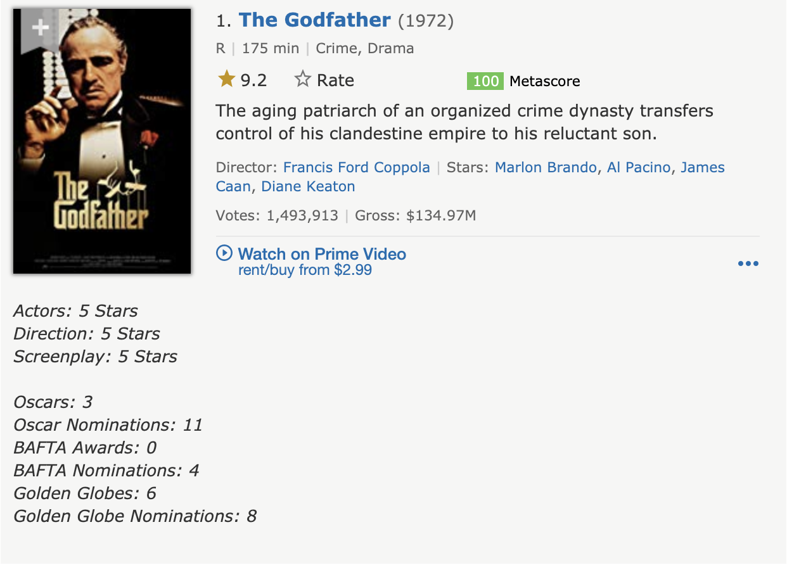

Scraping tabulated data from webpages to build datasets is fairly straight forward with the BeautifulSoup library in Python. However, it takes meticulous effort to extract the data when it is embedded in non-tabulated formats. We will be scraping data from the two of the most common platforms: Wikipedia and IMDb.
BeautifulSoup is a robust Python library with numerous functions to facilitate webscraping. We will be extracting data from the Wikipedia page for: Tech Companies in the NYC area. First step is import BeautifulSoup (for web scraping), urlopen (to access data from the URL), and pandas for data manipulation.
from bs4 import BeautifulSoup as soup
from urllib.request import urlopen as uReq
import pandas as pd
from IPython.display import Image
import matplotlib.pyplot as plt
import seaborn as sns# storing the URL in a variable
wiki_url = 'https://en.wikipedia.org/wiki/Tech_companies_in_the_New_York_metropolitan_area'
# establishing connection, grabbing the page
url_client = uReq(wiki_url)# offloading the content into a variable
wiki_page = url_client.read()
# closing connection
url_client.close()After we have loaded the URL and stored the webpage data into a variable, we can pass it into the BeautifulSoup function which makes it easier to call different webpage objects like classes, references, paragraphs, etc. The selected format for the data is html. In this case, lxml would also yield the same output.
Pandas library has a read_html function that can extract table from an html object and store it into a dataframe, so it is usually a good practice to check if we can get the data using that function.
wiki_soup = soup(wiki_page, "html.parser")
df = pd.read_html(wiki_page)
print(df)[ 0 1
0 NaN This list has no precise inclusion criteria as...]Now that we know that there aren’t any table objects in the HTML data, we can dive deeper into the webpage configuration by going to the page, right clicking and selecting the Inspect option. Inspect tab shows that the mw-parser-output class contains all the company lists as well as the text data above and below it. The find function can be used to look at the contents of all the divisions under the specified class (Output is verbose, hence it is hidden).
# found the class containing the list after inspecting
wiki_soup.find('div',{"class":"mw-parser-output"});A further look through the contents of the mw-parser-output class shows that all the objects are tagged in HTML list tags <li>, which is can be iterated over and stored in an array! The find_all function with paraments li and mw-parser-output can be used to accomplish this. A for loop can be used to iterate over the HTML lists and append the values into an empty array company_list. However, this stores all the description texts into the array as well and since the list objects had no class name associated to them, we can pass an empty class and this should solve the problem!
company_list = []
for company in wiki_soup.find_all('li',{"class":""}):
company_list.append(company.text)
last = company_list.index('BioValley')
company_list = company_list[0:last]
print(company_list[:7])['FanDuel[8]', 'Moonit', 'Trello[9]', 'Enigma Technologies [10]', 'IBM Watson', 'MongoDB', 'BetterCloud[11][12]']Now that we have an array (python list) containing the required data, we need to clean up a couple of things before proceeding with any further analysis. Firstly, the list also contains some stray text objects in the end. These can be removed by checking the index of the last company name on the list (‘BioValley’) and slicing the company_list at that index. Secondly, we can see that the company names also include numbers enclosed in square brackets (most likely the reference numbers from the article bibliography section). This can be cleaned by writing a Regex function to eliminating all the non-alphabetic characters in the list of strings.
#Another way of extracting the company names, however the output from this required more manual cleaning
alt_list = []
for company in wiki_soup.find_all('a',{"class":""}):
alt_list.append(company.text.title())
#Third way
#for company in wiki_soup.find_all('ul'):
# print(company.text)The re.sub function takes in the ‘[^A-Za-z]’ which specifies substituting any non-alphabetic characters with with an empty string in the interator variable element from the company_list. The clean output is stored into a new list called clean_list, which is then converted into a pandas dataframe.
# Regex Library
import re
# new array for clean data
clean_list = []
# implementing regex on all list objects
for element in company_list:
clean_list.append(re.sub('[^A-Za-z]','',element))
# list to dataframe
company_df = pd.DataFrame(clean_list)
company_df.columns = ['Company_Name']
print(company_df.head())
print(company_df.shape) Company_Name
0 FanDuel
1 Moonit
2 Trello
3 EnigmaTechnologies
4 IBMWatson
(109, 1)We finally obtain a dataset of 109 tech companies in the NYC area, which could help with job search for anyone looking for jobs in Tech! The only downside for the above Regex is that it also gets rid of spaces but for now, I am not sure how to fix that but I will come back to it once I am more fluent with Regex.
Since every webpage is different when comes to embedded data, it is good practice to scrape data from another prominent source - IMDb. In this part, we will be using the top 100 movies of all time IMDb list! It is interesting to note that IMDb switched its page format in the recent months, due to which the movies are not tabulated anymore, instead they show up in blocks. See below for a comparison between the two:
Old View (Tabulated): 
New View (Embedded): 
The embedded form presents an interesting challenge for us, so firstly, we will read in the URL, store the contents in a variable and pass it into the BeautifulSoup function with html.parser parameter.
imdb_url = 'https://www.imdb.com/list/ls055592025/'
imdb_page = uReq(imdb_url).read()
imdb_soup = soup(imdb_page, "html.parser")
imdb_soup.find('table')A quick look at the imdb_page HTML content shows that there are no <tr> tags (HTML tabulated data), which means we will have to proceed further with the Inspect option on the browser to find out the class heirarchy. The lister-list class contains all the movie blocks on the page and there are atleast 5 other classes in the heirarchy below lister-list.
Iterating over the contents of lister-list and selecting h3 HTML tag yields the movie rank, movie name, and the year of release. This data is appended into movie_list array, which turns out to have a length of 100 (equal to the total number of movies), thus we don’t have any data to slice out.
imdb_lister = imdb_soup.find('div',{"class":"lister-list"})movie_list = []
for movie in imdb_lister.findAll('h3'):
movie_list.append(movie.text)
print(movie_list[0:3])
print(len(movie_list))['\n1.\nThe Godfather\n(1972)\n', '\n2.\nThe Shawshank Redemption\n(1994)\n', "\n3.\nSchindler's List\n(1993)\n"]
100The above data does not contain movie ratings, which is essential for our data analysis. After looking at the Inspect tab of the browser, we find that the lister-list class has 5 levels of heirarchy below it and one of the bottom most branches named ipl-rating-star__rating class contains the rating information. In the below function, we iterate over the parent class of the rating ipl-rating-widget and extract the text out of span tag with the class ipl-rating-star__rating. All the ratings are stored in imdb_rating array (final length 100).
Figuring out this heirarchical behavior was not very straight forward, I tried multiple methods and finally streamlined the final version to the above method. This part took a while but I learned a lot while getting over this hurdle!
imdb_rating = []
for element in imdb_lister.findAll('div',{"class":"ipl-rating-widget"}):
imdb_rating.append(element.find('span',{'class':'ipl-rating-star__rating'}).text)
print(imdb_rating[0:5])['9.2', '9.3', '8.9', '8.2', '8.5']Data cleaning steps involve: - Converting the movie_list array into a dataframe and splitting the column into 3 separate columns using str.split by the occurance of ‘\n’ - Converting the imdb_rating array into a dataframe and merging the two dataframes and assigning relevant column names
movie_df = pd.DataFrame(movie_list)
movie_df.columns = ['all_data']
split_df = movie_df['all_data'].str.split('\\n',n = 4, expand = True)split_df.head()| 0 | 1 | 2 | 3 | 4 | |
|---|---|---|---|---|---|
| 0 | 1. | The Godfather | (1972) | ||
| 1 | 2. | The Shawshank Redemption | (1994) | ||
| 2 | 3. | Schindler’s List | (1993) | ||
| 3 | 4. | Raging Bull | (1980) | ||
| 4 | 5. | Casablanca | (1942) |
The n was set to 4 as there are 4 occurances of ‘\n’ in each record, so to get rid of all of them extra columns 0 and 4 are created. We can now assign rows 1, 2, and 3 back to movie_df with relevant column names and also merge the ratings data into movie_df.
movie_df['Movie_Rank'] = split_df[1]
movie_df['Movie_Name'] = split_df[2]
movie_df['Release_Year'] = split_df[3]
movie_df['Rating'] = pd.DataFrame(imdb_rating)[0]movie_df.head()| all_data | Movie_Rank | Movie_Name | Release_Year | Rating | |
|---|---|---|---|---|---|
| 0 | 1.Godfather(1972) | 1. | The Godfather | (1972) | 9.2 |
| 1 | 2.Shawshank Redemption(1994) | 2. | The Shawshank Redemption | (1994) | 9.3 |
| 2 | 3.’s List(1993) | 3. | Schindler’s List | (1993) | 8.9 |
| 3 | 4.Bull(1980) | 4. | Raging Bull | (1980) | 8.2 |
| 4 | 5.(1942) | 5. | Casablanca | (1942) | 8.5 |
Final data cleaning steps involve: - Dropping the all_data column - Removing the . from the Movie_Rank - Removing the parentheses from the Release_Year
movie_df = movie_df.drop(columns = 'all_data')
movie_df['Movie_Rank'] = movie_df['Movie_Rank'].str.replace('[^0-9]','')
movie_df['Release_Year'] = movie_df['Release_Year'].str.replace('[^0-9]','')
movie_df.Release_Year = movie_df.Release_Year.astype('int32')
movie_df.Movie_Rank = movie_df.Movie_Rank.astype('int32')movie_df.head()| Movie_Rank | Movie_Name | Release_Year | Rating | |
|---|---|---|---|---|
| 0 | 1 | The Godfather | 1972 | 9.2 |
| 1 | 2 | The Shawshank Redemption | 1994 | 9.3 |
| 2 | 3 | Schindler’s List | 1993 | 8.9 |
| 3 | 4 | Raging Bull | 1980 | 8.2 |
| 4 | 5 | Casablanca | 1942 | 8.5 |
Finally, we have clean, tabulated data for the top Hollywood 100 movies of all time! When the candidate has used the company list from part 1 to secure a job, this dataset could come in handy for a consolidated list of movies to watch before joining!
#movie_df.info()
sns.set(color_codes=True)
sns.distplot(movie_df.Release_Year, bins = 8, kde = False).set_title('Top 100 Movies by Decade',fontsize = 20)
plt.xlabel("Movie Release", fontsize = 15)
plt.ylabel("Number of Movies",fontsize = 15)
plt.tick_params(labelsize=10)png
The histogram shows that 1950-1970 produced the most number of all time Top 100 movies.